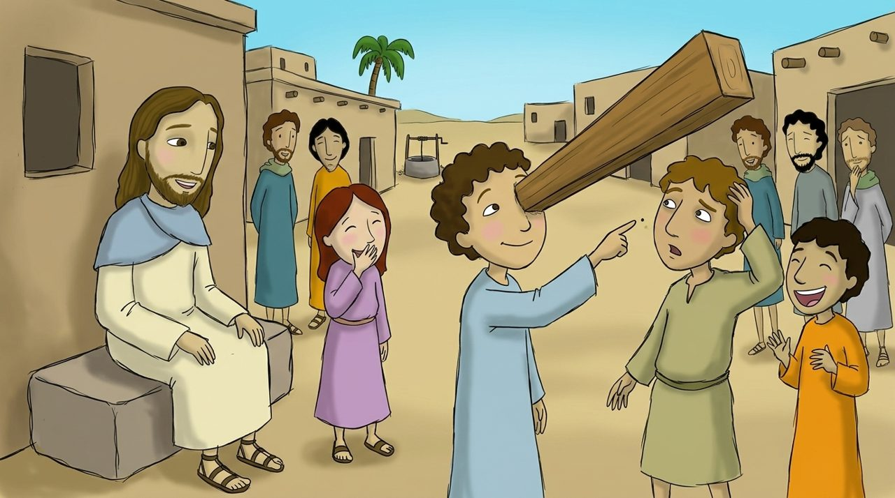
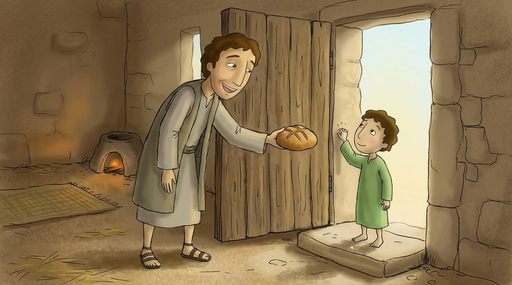
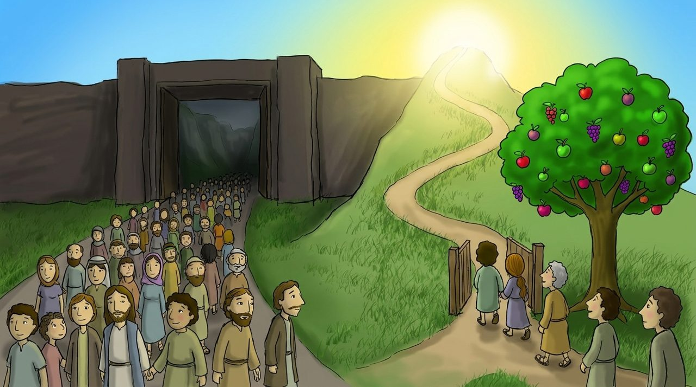

Scene 1 · Matthew 7:1–5
The plank in your own eye
Jesus said something interesting: 'Why do you see the in your brother's eye, but don't notice the in your own eye?'
Before we others, we should look at our own mistakes.

Matthew 7:1–29
Tap the yellow words to see what they mean. The 🔊 button reads aloud.

Jesus said something interesting: 'Why do you see the in your brother's eye, but don't notice the in your own eye?'
Before we others, we should look at our own mistakes.

‘Ask, and it will be given to you. Seek, and you will find. Knock, and it will be opened for you.’
‘Is there a father who gives his child a stone when he asks for bread? Your heavenly Father gives even better things.’ And: ‘Whatever you desire for people to do to you, you shall also do to them.’

‘Enter in by the . The way that leads to life is narrow, and few are those who find it.’
‘A good tree produces good .’ When we look at our words and actions, we can see what our heart is like.
‘Everyone who hears my words and does them is like a wise man who built his house on a . Even if it rains and the wind blows, the house won't fall.’
‘But everyone who hears my words and doesn't do them is like a foolish man who built his house on sand. That house will fall.’ The people were amazed at Jesus's teaching, because he taught with .
“Ask, and it will be given to you; seek, and you will find; knock, and it will be opened for you.”
Matthew 7:7 · in simple words for children
, and it will be given to you; , and you will find; , and it will be opened for you.
Choose the words for the blanks in order.
Draw your house standing firm on a rock.
Jesus, help me to look at myself before judging others. Teach me to ask, seek, and knock when I pray to the heavenly Father. Let me not only hear your words, but do them, so I can be a wise person who builds their house on the rock. I pray in the name of Jesus Christ. Amen.